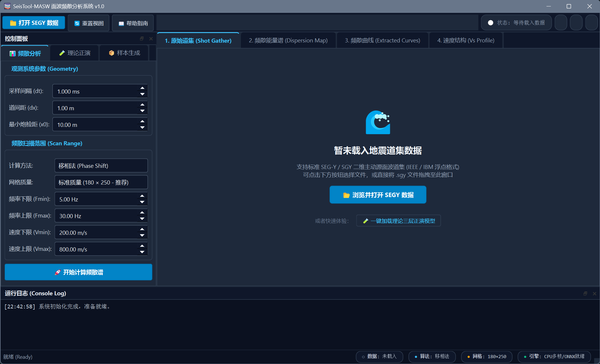
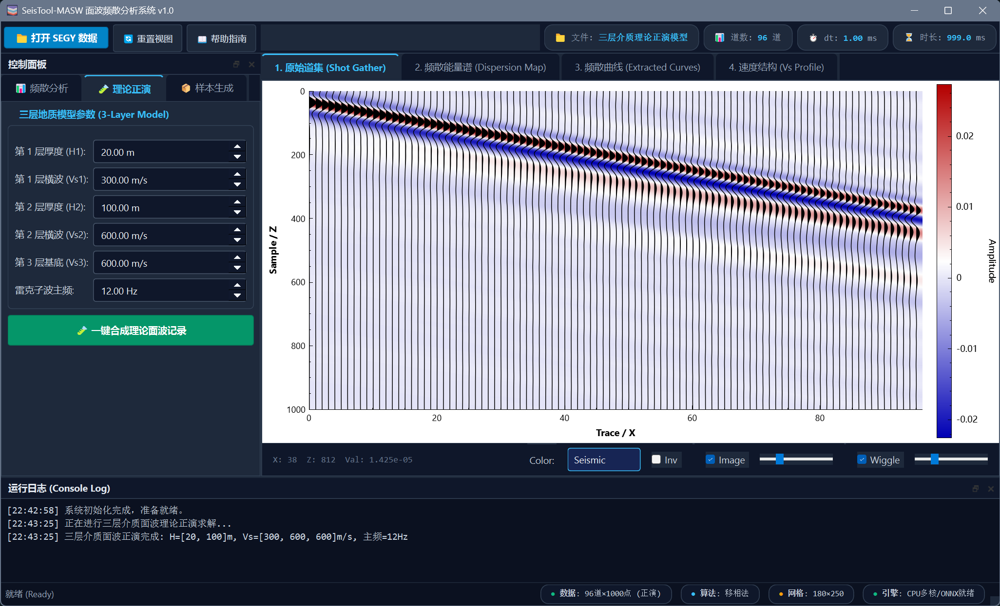
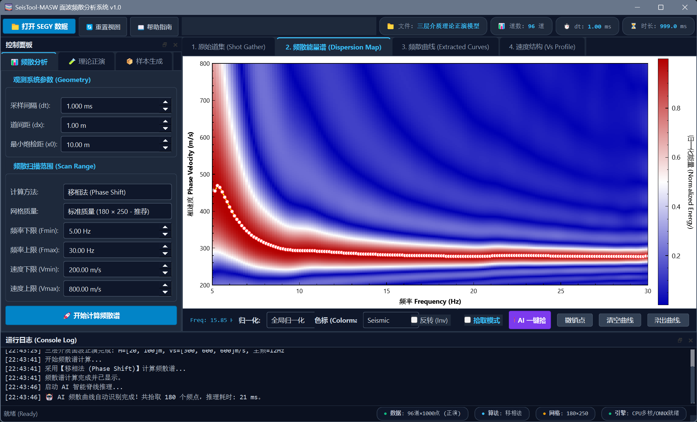
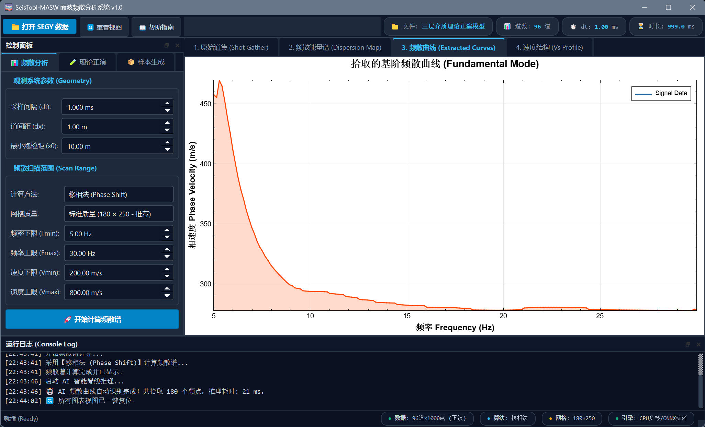
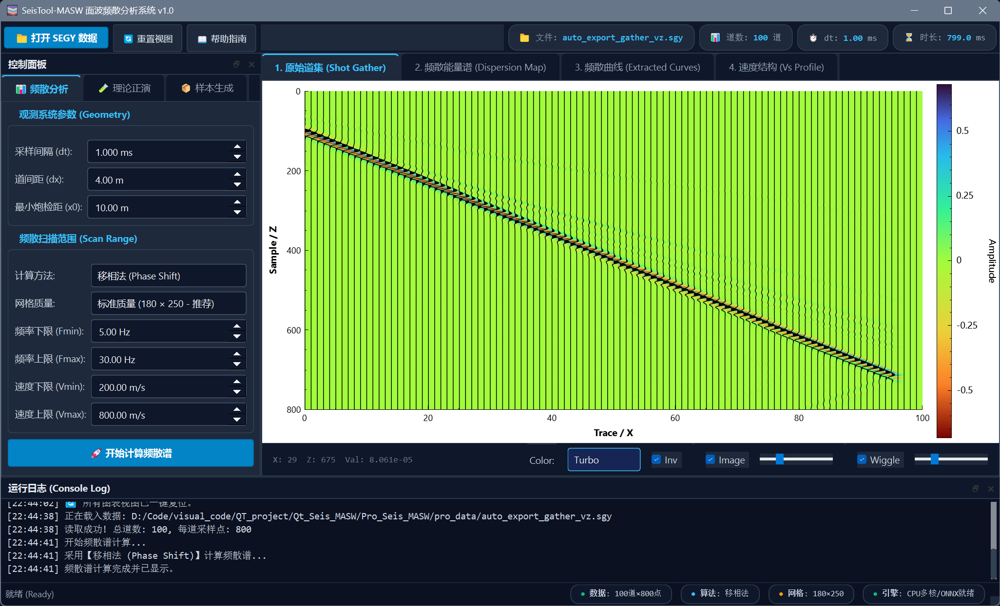
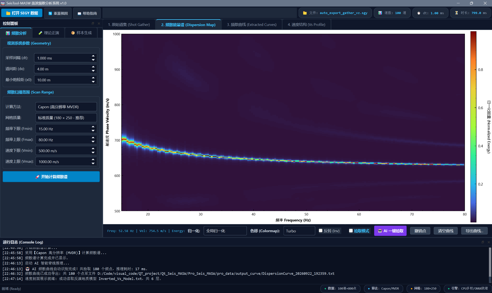
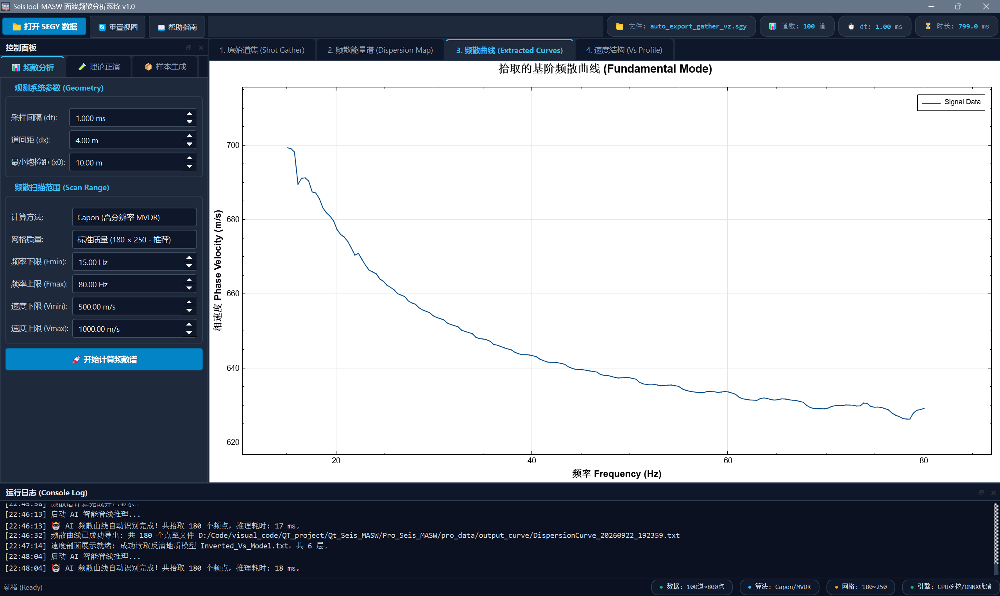
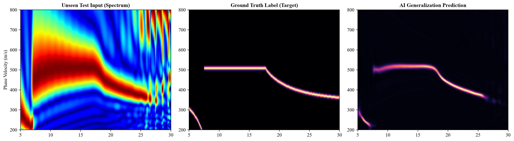
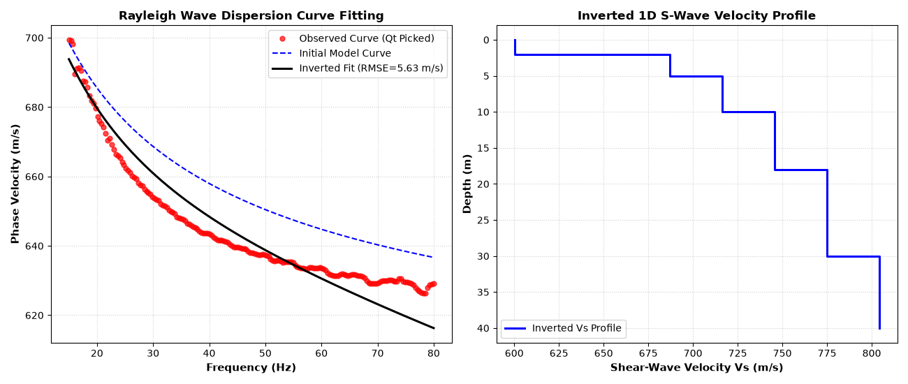
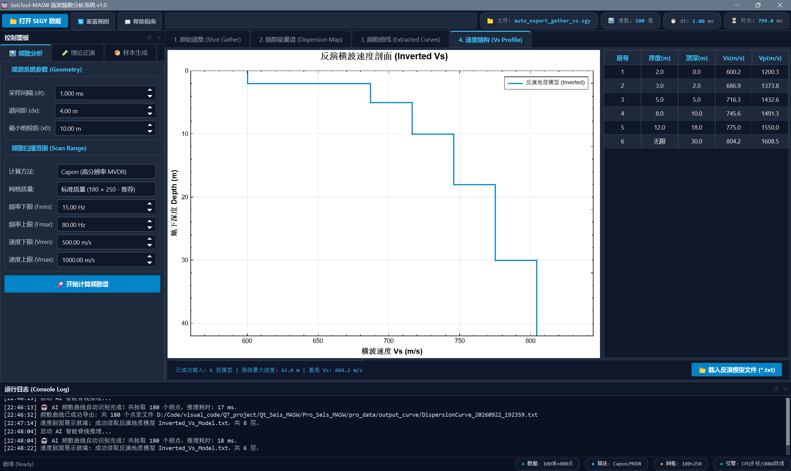

SeisTool-MASW 面波频散分析与处理系统
SeisTool-MASW 面波频散分析与处理系统
摘要 (Abstract)
SeisTool-MASW 具备完整的一体化面波分析核心功能：系统支持全格式标准 SEG-Y 地震道集的极速解码、文件拖拽载入与“Wiggle 抖动波形+变密度热力图”双层混合波场可视化；集成了基于 Schwab-Knopoff 算法的多层介质理论频散正演与多道时域物理波场合成能力；内置了涵盖经典移相法（Phase Shift）、F-K 变换法、高分辨率 Capon 最小方差法（MVDR）与时域倾斜叠加法（$\tau-p$）的四大频散能量成像算子，配合频域复数线性插值彻底消除离散阶梯锯齿；支持局部极大值自适应寻峰吸附（Snap-to-Peak）与基于内置轻量级空洞残差网络的 ONNX Runtime 毫秒级 AI 一键智能拾取；并构建了基于 Tikhonov 平滑正则化的 1D 横波速度（$V_s$）剖面反演引擎，可联动生成地下深度-速度阶梯图与分层参数表，全面支持频散曲线文本、频散谱及合成道集的双向 SEG-Y 数据导出，真正实现了从野外波场采集到地下地质成果交付的端到端闭环。
📚 项目地址 (Project Address)
—- https://github.com/XiaoYu-1111/Qt_Seis_MASW
界面与效果预览

核心功能视图概览
| 原始道集与波形剖面 (Tab 1) | 频散能量谱与自动吸附拾取 (Tab 2) | 频散曲线对比与反演质控 (Tab 3) |
|---|---|---|
 |
 |
 |
| Wiggle 抖动线 + 变面积填充叠加变密度底图 | 高分辨率相速度谱 (支持色标/归一化即刻切换) | Plot1D 期刊级展示 (实测点与理论线叠合比对) |
理论正演与多视图联动验证
| 原始道集与波形剖面 (Tab 1) | 频散能量谱与自动吸附拾取 (Tab 2) | 频散曲线对比与反演质控 (Tab 3) |
|---|---|---|
 |
 |
 |
| 深度学习训练数据 | 横波速度反演结果 | 结果显示 |
 |
 |
 |
目录
- 核心功能特性
- 系统架构与三轨工作流
- 核心算法与数学物理原理
- 开发环境与依赖库
- Visual Studio 关键配置指南
- 项目完整目录结构
- 数据输入与导出规范
- Python 算法实验室与 AI 训练体系
- 许可证与致谢
核心功能特性
1. 专业地震道集解析与成像（Tab 1: Shot Gather）
- 工业级 SEGY 解析：支持标准 IBM 32-bit Float（代码 1）与 IEEE 754 Float（代码 5）大端序地震数据的快速解码，自动解析二进制卷头及 240 字节道头（道数、采样率 $dt$、每道样点数 $nt$、最小炮检距 $x_0$、道间距 $dx$）。
- 双层混合波场成像：
- 底图：变密度伪彩热力图（ColorMap），支持 12 种主流地学色谱切换与对比度滑块无级调节；
- 顶层：高保真地震抖动线（Wiggle Trace）与正半周变面积黑色填充（Variable Area），具备自适应振幅增益控制（Gain Slider）。
- 大规模数据视口裁剪与 LOD 加速：内置视锥裁剪（Frustum Culling）算法与基于屏幕像素密度的动态步长重采样（Level of Detail），即便面对上千道的大型测线道集，缩放平移依然保持 60 FPS 流畅帧率。
- 双向数据交互：不仅支持外部文件拖入，更支持将软件内正演合成的面波道集一键右键另存为标准 SEGY (*.sgy) 格式。
2. 四大频散能量谱成像全家桶（Tab 2: Dispersion Map）
系统集成了面波勘探史上具有里程碑意义的四大频散成像算子，支持在界面中瞬时切换对比：
- 经典移相法（Phase Shift, Park et al., 1998）：系统基准算法。具备逐道纯相位归一化，高低频能量极其均衡，抗几何扩散与强衰减能力最强。
- 高分辨率 Capon 最小方差法（MVDR / HRFK）：采用前向-后向双向空间平滑（FBSS）构造满秩协方差矩阵，结合对角加载（Diagonal Loading）求逆，将主频散脊线宽度压缩至传统方法的 1/3，高低阶模态分界极其锐利。
- 时域倾斜叠加法（Slant-Stack / $\tau-p$ 变换, McMechan & Yedlin, 1981）：在时空域沿线性时差方向做动校正求和（Radon 变换），结合分数走时高精度线性插值，再沿截距时间 $\tau$ 进行 1D FFT，保留最真实的物理波场干涉。
- 经典 F-K 变换法（Frequency-Wavenumber）：时空双重傅里叶变换映射，提供极速的大视场宏观扫描。
- 频域复数线性插值技术：在扫描频率 $f$ 处采用相邻 FFT 频点复数加权插值与纯相位重归一化，彻底根除了离散傅里叶频点量化引起的“平顶阶梯锯齿效应”。
- 实时色标与滤波控制：
- 双模式归一化：支持【按频率列归一化（推荐，全频段深红脊线）】与【全局归一化（保留能量衰减规律）】1 毫秒免重算瞬时切换；
- 滤波平滑切换：右键菜单支持在 MATLAB 风格离散纯净网格块（Nearest）与双线性平滑云雾渐变（Bilinear）之间自由切换。
3. 智能曲线拾取与双视图联动（Tab 2 $\leftrightarrow$ Tab 3）
- 局部极大值自动吸附（Snap-to-Peak）：用户在能量带附近鼠标轻点，算法自动在垂直速度方向（$\pm 15$ 个网格，约 $\pm 30\text{ m/s}$）内搜索物理极大值峰顶并精准就位，彻底消除手抖误差。
- 🤖 ONNX Runtime AI 深度学习一键智能拾取：
- 内置针对频散谱特征定制的轻量级多尺度空洞残差卷积网络（
DispersionRidgeNet）； - 在 C++ 桌面端利用微软 ONNX Runtime 引擎直接进行 CPU 毫秒级推理，自动生成连续骨架曲线。
- 内置针对频散谱特征定制的轻量级多尺度空洞残差卷积网络（
- 实时双向图层联动：
- Tab 2（能量图）：上方实时绘制高对比度亮黄色实线与红白采样圆点；
- Tab 3（
Plot1D）：自动对拾取点按频率升序重排，生成封闭边框（Box Style）期刊级散点折线图。
- 编辑与导出：支持单点撤销（Undo）、点位重复覆盖修正、一键清空，以及导出为标准三列反演文本（
Frequency, PhaseVelocity, Wavelength）。
4. 1D 横波速度结构剖面展示与地层表格（Tab 4: Vs Profile）
- 地下深度 vs 横波速度阶梯图（1D Vs Step Profile）：
- 垂直向下延伸的地学标准深度轴（
yAxis->setRangeReversed(true)）； - 采用阶梯线（Step Plot）严谨反映地下不同地质界面的速度突变。
- 垂直向下延伸的地学标准深度轴（
- 地层参数实时表格（QTableWidget）：
- 自动同步列出层号、厚度 $H$、顶面埋深、横波速度 $V_s$、纵波速度 $V_p$；
- 消除水平滚动条自适应平分列宽，深色主题交替行着色，字迹高亮清晰。
- 成果导入接口：支持读取 Python 优化反演生成的
Inverted_Vs_Model.txt模型文件并直接成图。
5. 层状介质理论正演与时域面波合成（Forward Modeling）
- Schwab-Knopoff 理论频散求解器：
- 内置基于传递矩阵的超越特征方程求解器；
- 利用双曲正切消指数增长技术，根治了传统 Thomson-Haskell 方法的高频数值溢出问题；
- 支持双层、三层及任意 $N$ 层速度递增或低速软弱夹层地质模型的理论基阶相速度正演计算。
- 物理频散面波记录时域合成：
- 结合雷克子波振幅谱与理论相速度相移调制：$S(x, f) = A(f) e^{-i 2\pi f x / c(f)}$；
- 利用逆傅里叶变换（IFFT）直接合成具有真实频散延迟特征的多道地震炮集（直接载入 Tab 1 供全流程测试）。
6. 人机交互与工控级视觉体验
- 卡片式空状态指引（Empty State）：启动初期居中展现现代化操作卡片，提供大图标、快速浏览按钮及【🧪 一键加载理论三层模型】快速体验入口。
- 全窗口拖拽载入（Drag & Drop）：支持从 Windows 桌面直接将
.sgy文件拖入窗口快速秒开。 - 顶部数据看板徽章（Data Badges）：工具栏右侧动态点亮深蓝微光胶囊标签，实时呈现文件名、道数、采样率与记录时长。
- 底部地学仪器级状态指示灯（Status Chips）：状态栏常驻 4 颗带 LED 色彩的状态指示芯片（算力引擎、当前算法、网格规格、数据道数），随面板操作动态刷新。
系统架构与三轨工作流
系统涵盖了外场实测数据处理、理论正演数值模拟与AI 模型训练闭环三条互通的工作流：
```text
【实测数据流】 【理论正演流】
┌────────────────────────┐ ┌────────────────────────┐
│ 外场实测 SEGY 数据 │ │ 1D 地层模型参数输入 │
│ (.sgy / .segy) │ │ (H1, H2, Vs1, Vs2…)│
└───────────┬────────────┘ └───────────┬────────────┘
│ 拖拽 / 浏览打开 │ 一键理论正演合成
▼ ▼
┌─────────────────────────────────────────────────────────────────────────────┐
│ Tab 1: 原始地震道集剖面展示与分析 (Shot Gather) │
│ - Wiggle 抖动线 / 变面积填充 / 灰度变密度剖面 / 增益调节 │
│ - 顶部看板显示 [文件名 | 96道 | 1.0ms | 1000ms] / 右键导出合成道集 SEGY 文件 │
└──────────────────────────────────────┬──────────────────────────────────────┘
│ 设定观测系统与扫描网格: dt, dx, x0, f, v
▼
┌─────────────────────────────────────────────────────────────────────────────┐
│ Tab 2: 移相法 / F-K / Capon MVDR / 倾斜叠加 τ-p 频散能量谱 (Dispersion Map) │
│ - 频域复数线性加权插值 (彻底消除阶梯锯齿) + OpenMP 多核极速并行 │
│ - [拾取模式] -> 鼠标点选触发 Snap-to-Peak 局部极大值自动吸附 (或点击 🤖 AI一键拾取) │
│ - 右键切换清晰色块(Nearest) / 双线性平滑(Bilinear) / 导出频散谱 SEGY 文件 │
└──────────────────┬──────────────────────────────────────────┬───────────────┘
│ 实时同步提取点 │ 理论相速度真值
▼ ▼
┌─────────────────────────────────────────────────────────────────────────────┐
│ Tab 3: 频散曲线对比与反演质控 (Extracted Curves) │
│ - Plot1D 封闭边框期刊级展示 │
│ - 实测提取散点与理论红线叠合比对 (闭环质检) │
│ - 一键导出反演标准 ASCII 文本 (Frequency, PhaseVelocity, Wavelength) │
└──────────────────────────────────────┬──────────────────────────────────────┘
│ 输入反演数据
▼
┌─────────────────────────────────────────────────────────────────────────────┐
│ Tab 4: 1D 横波速度剖面展示与分层参数表 (Vs Profile) │
│ - 垂直台阶线阶梯剖面 (Depth vs Vs, 深度向下递增) │
│ - 地层参数表格同步呈现 (层号、厚度、顶深、Vs、Vp) │
│ - 载入 Python / C++ 优化反演生成的 Inverted_Vs_Model.txt 文件展示成果 │
└─────────────────────────────────────────────────────────────────────────────┘
核心算法与数学物理原理
- 四大频散能量谱成像算子
A. 经典移相法（Phase Shift, Park et al., 1998）
对地震道进行时间向傅里叶变换并执行纯相位归一化，剔除几何扩散衰减：
P(x_j, \omega) = \frac{U(x_j, \omega)}{|U(x_j, \omega)|}
沿试探相速度 v 扫描，执行空间相位相干补偿叠加：
E(v, f) = \frac{1}{N} \left| \sum_{j=1}^{N} P(x_j, 2\pi f) \cdot \exp\left(i \frac{2\pi f \cdot x_j}{v}\right) \right|
B. 高分辨率 Capon 最小方差法（MVDR / HRFK）
通过长度为 L 的滑动子阵列计算空间平滑协方差矩阵 \mathbf{R}_f，并引入后向平滑
\mathbf{R}_b = \mathbf{J} \mathbf{R}_f^* \mathbf{J} 构造满秩矩阵：
\mathbf{R} = \frac{1}{2}(\mathbf{R}_f + \mathbf{R}_b) + \epsilon \mathbf{I}
定义物理导向矢量
\mathbf{a}(v) = \left[ 1, e^{-i \frac{\omega}{v} \Delta x}, \dots, e^{-i \frac{\omega}{v} (L-1)\Delta x} \right]^T，自适应滤除相干旁瓣干扰：
E_{\text{Capon}}(v, f) = \frac{1}{\mathbf{a}^H(v) \mathbf{R}^{-1} \mathbf{a}(v)}
C. 时域倾斜叠加法（Slant-Stack / \tau-p 变换, McMechan & Yedlin, 1981）
时空域线性动校正（LMO）截距时间叠加：
u(\tau, p) = \sum_{j=1}^{N} u(x_j, \tau + p \cdot x_j), \quad p = \frac{1}{v}
沿截距时间 \tau 执行 1D 傅里叶变换映射至速度谱：
E(v, f) = \left| \int u(\tau, 1/v) e^{-i 2\pi f \tau} d\tau \right|
- Schwab-Knopoff 层状弹性介质频散特征方程
对于 N 层水平均匀各向同性弹性介质，地表满足自由应力边界条件，无限深基底满足波场向下衰减条件。联立各层位移-应力传递矩阵并引入双曲正切消指数项
\tanh(k r_m d_m) = \frac{1-e^{-2kr_md_m}}{1+e^{-2kr_md_m}}，构建隐式超越特征方程：
F(c, \omega; \mathbf{H}, \mathbf{V_s}, \mathbf{V_p}, \mathbf{\rho}) = 0
系统从高频渐近线（c \approx 0.92 V{s, \text{top}}）出发，利用 Brent-Dekker
混合求根算法沿频率逆序追踪，确保数值解收敛于基阶模态 v{R0}(f)。
[三层弹性模型: H, Vs, Vp, Rho]
│
▼ 【公式 1: Schwab-Knopoff 传递矩阵求根】
[理论相速度曲线: c(f)] ───────► (直接画在 Tab 3 的理论红线)
│
▼ 【公式 2: 频域相位调制 + IFFT 时域合成】
[多道地震道集: u(x, t)] ─────► (显示在 Tab 1 的合成 Wiggle 波形)
│
▼ 【公式 3: Park / Capon / τ-p 空间相干叠加】
[频散能量谱: E(f, v)] ───────► (显示在 Tab 2 的亮红色能量带)
- 1D 横波速度结构反演目标函数（Tikhonov 正则化）
将观测频散曲线 \mathbf{v}^{\text{obs}} 反演为各层横波速度
\mathbf{m} = [V{s1}, V{s2}, \dots, V{sN}] 的目标函数定义为：
\Phi(\mathbf{m}) = \frac{1}{2} \sum{i=1}^{M} \left( v_R^{\text{obs}}(f_i) - v_R^{\text{calc}}(f_i, \mathbf{m}) \right)^2 + \frac{\lambda}{2} |\mathbf{L} \mathbf{m}|_2^2
其中 \mathbf{L} 为一阶平滑差分算子（粗糙度矩阵），有效规避了地层速度在垂向上的锯齿状震荡解。
开发环境与依赖库
- 操作系统：Windows 10 / 11 (x64)
- IDE 与编译器：Microsoft Visual Studio 2022 (MSVC v143, C++17 标准)
- GUI 框架：Qt 5.12+ / Qt 6.x（Widgets 模块）
- 核心依赖库：
- Eigen 3.3+：高性能密集矩阵运算与
快速傅里叶变换 - QCustomPlot 2.1+：双层混合剖面与出版级曲线绘图引擎
- ONNX Runtime (C++ API v1.30.0)：轻量级深度学习前向推理引擎
- OpenMP：多核 CPU 指令级并行加速
- Eigen 3.3+：高性能密集矩阵运算与
Visual Studio 关键配置指南
在 Visual Studio 2022 中编译运行本系统时，必须确认以下关键工程属性：
编译选项设置
- 启用扩展对象格式 /bigobj（解决 Eigen 深度模板展开导致的符号溢出）：
- 项目属性 \to C/C++ \to 命令行 \to 其他选项添加：/bigobj
- 强制 UTF-8 源代码编码 /utf-8（解决 MSVC 中文字符断句与 C2143 报错）：
- 项目属性 \to C/C++ \to 命令行 \to 其他选项添加：/utf-8
- 启用 OpenMP 多线程加速：
- 项目属性 \to C/C++ \to 语言 \to OpenMP 支持 \to 设为 是 (/openmp)。
- 启用扩展对象格式 /bigobj（解决 Eigen 深度模板展开导致的符号溢出）：
ONNX Runtime C++ 库集成配置
下载解压 onnxruntime-win-x64-1.30.0.zip 并置于 Pro_Seis_MASW/third_party/onnxruntime：
- 包含目录：C/C++ -> 常规 -> 附加包含目录 添加：$(ProjectDir)third_party\onnxruntime\include
- 库目录：链接器 -> 常规 -> 附加库目录 添加：$(ProjectDir)third_party\onnxruntime\lib
- 依赖项：链接器 -> 输入 -> 附加依赖项 添加：onnxruntime.lib
- 运行时动态库：将 onnxruntime.dll 复制到可执行程序目录（如 x64/Release/）。
项目完整目录结构
Qt_Seis_MASW/
├── Qt_Seis_MASW.sln # Visual Studio 2022 解决方案文件
├── Pro_Seis_MASW/ # C++ Qt 主工程目录
│ ├── Pro_h/ # 核心接口头文件
│ │ ├── Plot1D.h # 1D 专业科研图表组件 (QCustomPlot 派生类)
│ │ ├── QCPSeismicWiggle.h # 地震波形抖动线与变面积填充 Plottable 图元
│ │ ├── SeismicIO.h # SEGY 数据底层解析与多维导出接口
│ │ ├── SeismicView2D.h # 2D 剖面多功能查看器容器接口
│ │ ├── SignalProcessingUtils.h # 移相法、F-K、Capon MVDR、τ-p、CWT、VMD 算法库
│ │ └── RayleighForwardSolver.h # 层状介质理论频散求解与多道面波时域合成器
│ ├── Pro_cpp/ # 算法与组件实现源码
│ │ ├── Plot1D.cpp
│ │ ├── QCPSeismicWiggle.cpp
│ │ ├── SeismicIO.cpp
│ │ ├── SeismicView2D.cpp
│ │ ├── SignalProcessingUtils.cpp
│ │ └── RayleighForwardSolver.cpp
│ ├── third_party/ # 第三方轻量级依赖库
│ │ └── onnxruntime/ # 微软 ONNX Runtime C++ SDK (include/ & lib/)
│ ├── models/ # AI 神经网络模型交付目录
│ │ └── dispersion_picker.onnx # 导出的专用频散脊线提取模型
│ ├── pro_data/ # 地震数据与导出成果中转站
│ │ └── output_curve/ # 频散曲线文本与反演 Vs 模型保存目录
│ ├── Python_script/ # 独立 Python 后处理脚本
│ │ ├── plot_seismic_gather.py # 炮集 Wiggle/灰度剖面高清成图工具
│ │ └── plot_dispersion_map.py # 导出的频散谱 SEGY 300-DPI 成图工具
│ ├── Pro_image/ # 系统各功能界面截图与文档插图
│ │ ├── main1.png # Tab 1 原始道集截图
│ │ ├── main2.png # Tab 2 频散能量谱截图
│ │ ├── main3.png # Tab 3 提取频散曲线截图
│ │ ├── sync1.png # 理论正演道集联动截图
│ │ ├── sync2.png # 理论频散谱联动截图
│ │ └── sync3.png # 理论频散曲线叠合对比截图
│ ├── style.h # 全局 Slate 深色科技风格 QSS 样式表定义
│ ├── Pro_Seis_MASW.h # 主窗口逻辑控制器声明
│ ├── Pro_Seis_MASW.cpp # 界面构建、业务逻辑、事件响应与 AI 推理实现
│ └── main.cpp # 桌面应用程序入口
├── AI_Train_MASW/ # Python 独立 AI 训练工作台
│ ├── dataset/ # C++ 生成的连续大文件二进制数据集 (.bin)
│ ├── Main.ipynb # 从环境自检、张量载入到训练导出的 Jupyter 实验笔记
│ └── run_inversion.py # 1D 瑞雷波相速度 CoFI/disba 反演验证脚本
└── README.md # 系统完整技术说明文档
数据输入与导出规范
输入数据
- 支持标准勘探 SEG-Y / SGY 格式（二维主动源单炮道集，Common Shot Gather）。
- 兼容工程微动台阵与连续线性排列测量数据。
导出成果数据规范
A. 频散曲线文本格式（供反演软件调用）
点击 【导出曲线…】 输出的标准三列 ASCII 文本文件，可直接被 CPS330 (surf96)、Geopsy 或 Python 反演脚本调用：
Frequency(Hz) PhaseVelocity(m/s) Wavelength(m)
5.000 324.50 64.90
7.500 298.20 39.76
10.000 276.40 27.64
12.500 255.80 20.46
… … …
B. 1D 反演横波速度地层剖面格式
反演模块输出的层状速度模型文本（Inverted_Vs_Model.txt），可直接载入 Tab 4 绘制阶梯剖面：
Layer Thickness(m) Depth_Top(m) Vs(m/s) Vp(m/s) Density(kg/m3)
1 2.00 0.00 223.50 447.00 2000.0
2 3.00 2.00 319.80 639.60 2000.0
3 5.00 5.00 345.90 691.80 2000.0
4 8.00 10.00 372.00 744.00 2000.0
5 12.00 18.00 398.00 796.00 2000.0
6 0.00 30.00 423.80 847.60 2000.0
C. 二维频散能量谱 / 合成道集 SEGY 格式
- 频散谱导出：右键点击谱图选择 【💾 导出频散能量谱为 SEGY】，生成以频率为道（N_f）、相速度为采样点（N_v）的标准浮点 SEGY 文件。
- 合成道集导出：在道集视图中右键选择 【💾 导出道集为 SEGY】，将正演模拟的纯物理波场导出为标准地震道集。
Python 辅助工具链
系统在 Python_script/ 目录下配套提供了两套即开即用的专业数据可视化工具：
- plot_seismic_gather.py：基于 segyio 与 matplotlib，支持自动计算时间物理轴、自适应增益均衡并导出 300-DPI
Wiggle 波形与灰度剖面； - plot_dispersion_map.py：用于读取本系统导出的频散能量谱 .sgy 文件，支持物理坐标自动映射（Hz 与
m/s）及双三次平滑（Bicubic）抗锯齿超高清成图。
许可证与致谢
本项目基于工程实践与科研探索开发。底层绘图组件遵循 GPLv3 / QCustomPlot 商业许可；矩阵代数运算与快速傅里叶变换依赖开源 Eigen
矩阵库；理论层状介质特征超越方程基于 Schwab-Knopoff 理论构建；AI 部署基于微软开源 ONNX Runtime 引擎。